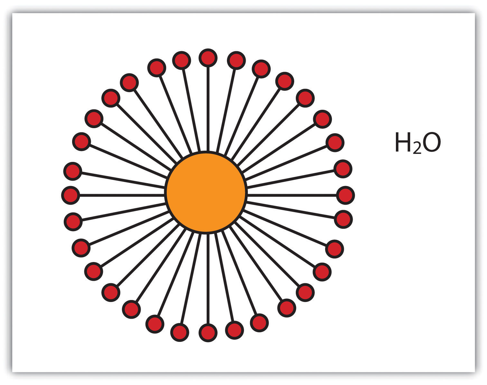
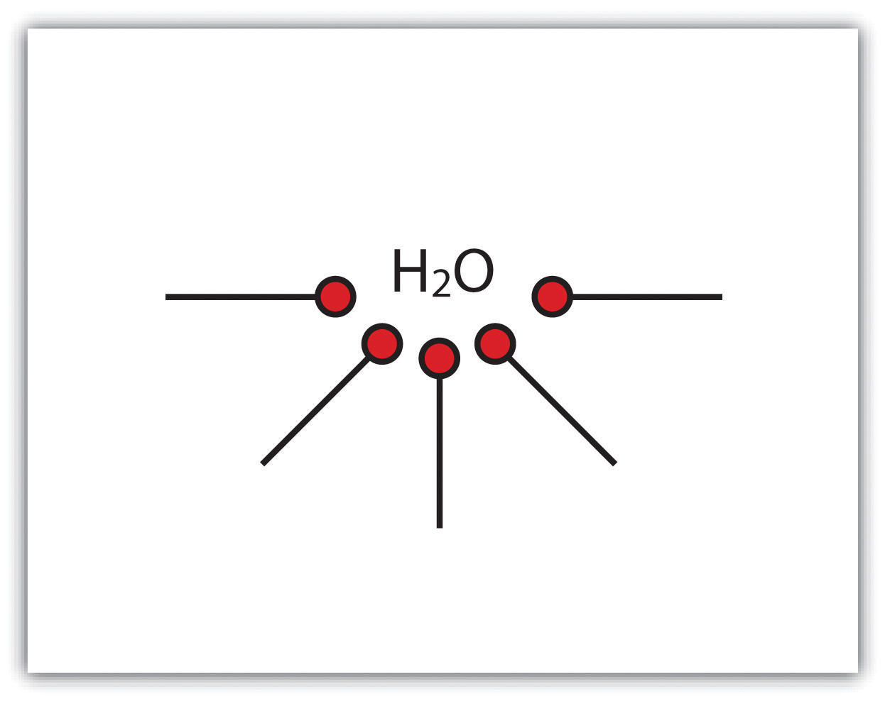
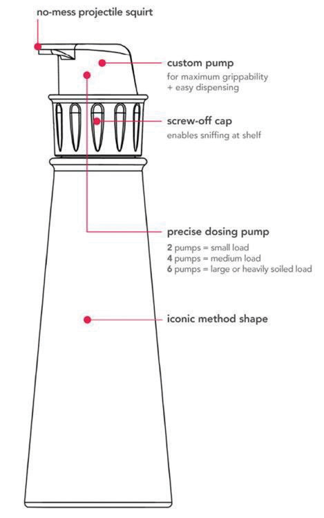
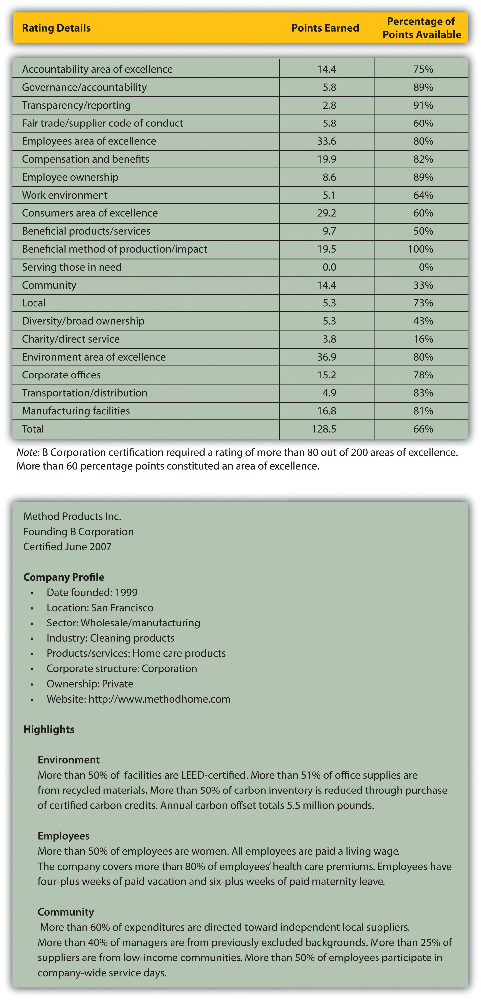

This second Method case examines the process by which the firm created a breakthrough product design in 2010. Method also became a B Corporation, joining a fast-growing number of other companies committed to making money and using business innovation to solve health, social, and environmental problems by paying attention to toxicity and broad stakeholder interests. (A detailed discussion of B Corporations follows the case.) Together the two Method cases offer insights into how entrepreneurially minded individuals can address chemical contamination and design concerns through innovative approaches.
Method Products Inc. had hit a sweet spot for its buyers by 2010.Andrea Larson and Mark Meier, Method Products: Sustainable Innovation as Entrepreneurial Strategy, UVA-ENT-0159 (Charlottesville: Darden Business Publishing, University of Virginia, 2010). Since its founding in 2000, the privately held Method had a clear mission: make good-smelling, high-performing household cleaners that were healthy throughout their material life spans and packaged in attractive, eye-catching, and eco-designed containers. Said Adam Lowry, cofounder and chief “greenskeeper”: “We wanted to change the way people view home cleaning. There is a disconnect between the way people feel about and care for their homes and the design of the products they use to clean them. We set out to evolve the household cleaner from an object that lived under the sink to a countertop accessory and must-have item by providing cool-looking, effective, nontoxic products that are healthy for both the environment and the home.”Andrea Larson and Mark Meier, Method Products: Sustainable Innovation as Entrepreneurial Strategy, UVA-ENT-0159 (Charlottesville: Darden Business Publishing, University of Virginia, 2010). All other quotations in this section not otherwise attributed come from this case study.
As scientific studies revealed growing health problems associated with chemical exposure and regulation of chemicals steadily rose around the world, more informed customers were seeking effective but healthier cleaning product options on retail shelves.
Despite the company’s small size and entrepreneurially disruptive approach, Method’s stylish cleaning products had quickly become state of the art in an industry moving toward sustainable business thinking. “We want to be thought leaders and we want to evoke change,” said cofounder and design guru Eric Ryan.Andrea Larson and Mark Meier, Method Products: Sustainable Innovation as Entrepreneurial Strategy, UVA-ENT-0159 (Charlottesville: Darden Business Publishing, University of Virginia, 2010). Method had in fact altered the once staid market for cleaning products in which large competitors traditionally fought over shelf facings, thin margins, and fractional market share points. Method introduced a three-times-more-concentrated laundry detergent in 2004 that met Walmart’s requirement that all detergent suppliers concentrate their products to save resources on packaging and shipping. In 2006, Method began getting many of its products cradle-to-cradle certified by McDonough Braungart Design Chemistry. This certification meant the products were nontoxic and used fewer resources throughout their life cycles. The next year, Method became one of the founding B CorporationsA company that is third-party-certified by B Lab, demonstrating its commitment to sustainability strategies and corporate social responsibility., a form of company that built environmental and social goals into its charter and passed third-party standards for sustainable practices. Method also worked through its public communications and website to express the goals and values that were an integral part of its company culture and products—that is, protecting health, children, and pets through eco-friendly and socially conscious products designed from a full life-cycle perspective.
Yet Lowry wanted to go further to catalyze the next wave of innovation within the company’s product categories. He and the company aspired to launch two major products a year. In 2008, Method turned to laundry detergents, a several-billion-dollar market in the United States alone. It devised an eight-times-concentrated detergent in an encapsulated tablet, or monodose format, which would further save packaging and product materials and drastically reduce manufacturing and distribution of energy usage. The consumer could toss the tablet in the washing machine with a load of laundry. It was convenient, efficient, less messy, and prevented using excess soap in each laundry load.
At a critical point in the product development process, everything about the monodose was working except one thing: the gel that encapsulated the detergent didn’t dissolve entirely in cold water, a result of the company’s decision not to use animal-derived ingredients such as the gelatins most often used for capsules. A bit of the plant-based gel casing could remain in the washing machine during the rinse cycle. Could Method and its loyal customers accept the residue as the price for a much more concentrated and environmentally compatible detergent formulation? Method could turn to petroleum-derived or gelatin capsules rather than plant-based materials for the capsule to solve the problem. Alternatively, the company could abandon the monodose concept and its inherent benefits. Lowry and his team contemplated what to do.
Adam Lowry and Eric Ryan knew each other growing up in Michigan, where their families had entrepreneurial companies that became significant suppliers to the automobile industry. Lowry earned his bachelor of science in chemical engineering from Stanford University and worked on climate change policy at the Carnegie Institution for Science, an organization that focused on innovation and discovery. There, he helped develop software tools for the study of global climate change. In his postcollege work experience, Lowry honed his unique approach to commercial environmentalism, which would form the basis of Method’s success. Through his combined education and employment, Lowry became convinced that business was “the most powerful agent for positive change on the planet. But it’s not business as we know it today. It is fundamentally and profoundly different. It is business redesigned.”Method, “Methodology: Behind the Bottle,” accessed August 24, 2010, http://www.methodhome.com/behind-the-bottle.
In 2006, Ryan was named one of Time magazine’s eco-leaders and received similar accolades from Vanity Fair. Ryan attended the University of Rhode Island and went into marketing, eventually doing work for the Gap and Saturn. The old high school classmates ran into each other on an airplane in 1997 and realized they lived on the same block of Pine Street in San Francisco. They soon thereafter became roommates, helping to maintain a house full of college fraternity brothers. As the story went, no one liked to clean. The two spent time discussing what was cool and what was not in commercial markets—and hence ripe for innovation. The pair settled on cleaning products, a bastion of typically harsh, dangerous chemicals—definitely not cool.
Lowry and Ryan used their bathtub to mix their own cleaners from natural, fragrant, and gradually more benign and renewable ingredients. Initial funding of $300,000 was provided through convertible debt from friends and family. They filled one beer pitcher at a time with their cleaners and made their first sale in February 2001 to a local grocery store—an order they scrambled to fill from their bathtub. The next day, Lowry and Ryan hired their new boss, an entrepreneurial CEO with an MBA and years of experience in the consumer packaged goods industry.
The founders knew presentation would matter when it came to making an impression on customers. Lowry said, “[We want to] inspire a happy, healthy home revolution.…We want it to be happy because, in our opinion, way too much of the green movement has been heavy handed in sort of an education-based instead of inspiration-based [way]. That’s one of the reasons that you see us concentrating so much on making our products not only work great and be green but be beautiful as well.”“Adam Lowry, the Man Behind the Method (Cleaning Products),” interview by Jacob Gordon, Treehugger Radio, podcast audio and transcript, April 30, 2009, accessed August 24, 2010, http://www.treehugger.com/files/2009/04/th-radio-adam-lowry.php.
They cold-pitched New York–based industrial designer Karim Rashid, whose aesthetically appealing work had appeared in museums, and he accepted the offer to design for Method. Soon, his designs would appear on countertops across the country. Rashid’s name and Ryan’s contacts got the company a pilot deal with Target to sell Method products at two hundred stores around Chicago and San Francisco. Method found a contract manufacturer to scale up production. Method’s commitment to excellence and attention to detail impressed Target, especially after a problem with leaky containers led Lowry and other Method employees to walk through Target and pull the leaky bottles off the shelves themselves; their container supplier quickly corrected the problem.
Method’s growth accelerated even as the company stayed true to its core values of style and social and environmental soundness. Target decided to carry Method products in all its stores, and Method went from having $16 in cash, credit card debt, and arrears to vendors in 2001 to profitability in 2005.“How Two Friends Built a $100 Million Company,” Inc., accessed January 11, 2011, http://www.inc.com/ss/how-two-friends-built-100-million-company. In 2006, Method experienced rapid growth, ending the year with about forty-five employees, fifty vendors and suppliers, and a foothold in the United Kingdom. The next year pushed sales to $71 million. Method expanded rapidly from hand soaps and countertop cleaners to body washes, floor cleaners, dish soaps, and laundry detergents. These products were carried by large retail chains such as Costco, Target, Lowe’s, and Whole Foods and generated over $100 million in revenue by 2010. Method’s former CEO distilled the company’s approach for success in 2006: “Method has to enter a category with a huge disruption. The story cannot be copied overnight or eroded by competitors. It has to have disruptive packaging, ingredients, and fragrance.”Stephanie Clifford, “Running Through the Legs of Goliath,” Inc., February 1, 2006, accessed January 12, 2011, http://www.inc.com/magazine/20060201/goliath.html.
The company also continued to use naturally occurring or naturally derived ingredients as much as possible. If synthetic ingredients were needed, they were screened for biodegradability and toxicity to humans and the environment but without the use of animal testing. People for the Ethical Treatment of Animals (PETA) gave Lowry and Ryan its 2006 award for Person of the Year. The founding duo wrote a guidebook in 2008 titled Squeaky Green: The Method Guide to Detoxing Your Home. Their company, meanwhile, strove to reduce its carbon footprint through efficiency, switching to biodiesel trucks, or buying offsets such as methane digesters for manure at three Pennsylvania dairy farms. It also became the first company to introduce a custom-made bottle manufactured from 100 percent post–consumer recycled (PCR) polyethylene terephthalate (PET), which has a recycling number, as part of the resin identification code, of one.
Despite its innovation, growth, and sterling public image, Method remained tiny relative to the competition. While Seventh Generation, an established producer of green cleaners and a fellow B Corporation, had sales comparable to Method’s, generating $93 million in revenue in 2007 and over $120 million the following year, the makers of conventional cleaning products were orders of magnitude larger. One of the largest companies in the world, Procter & Gamble (P&G) had a market capitalization of $180 billion in April 2010, and its Household Care business unit alone had sales of $37.3 billion in 180 countries in 2009. P&G’s laundry detergents in 2009 included Tide, the first synthetic heavy-duty detergent launched in 1946 and a now billion-dollar brand; Gain, another billion-dollar brand; Ace and Dash, each of which generated over $500 million in sales; and Cheer.Jeffrey Hollender, “How I Did It: Giving Up the CEO Seat,” Harvard Business Review, March 2010, accessed January 11, 2011, http://hbr.org/2010/03/how-i-did-it-giving-up-the-ceo-seat/ar/1; Procter & Gamble, 2009 Annual Report, accessed January 11, 2011, http://www.pg.com/en_US/investors/financial_reporting/annual_reports.shtml. In short, P&G’s laundry detergents dominated that market and by themselves generated more than thirty times Method’s revenue.
Other giants with broad product portfolios operated in the laundry detergent market. In 2009, Unilever, also a food producer, had total sales of about $55 billion. Colgate-Palmolive, known for toothpastes and dish soaps, had sales of $15 billion. Clorox, best known for its chlorine bleach, had sales of $5.5 billion. Clorox also had proven particularly adroit at moving into the green cleaning market. It launched its Green Works line in the United States in 2008, rapidly expanded into fourteen countries, and, according to the company, captured 47 percent of the natural cleaner market from mid-2008 to mid-2009, more than doubling the closest competitor’s share. Church & Dwight Co., makers of Arm & Hammer brand baking soda, pulled in another $2.5 billion in sales in 2009 and marketed a series of baking soda–based green cleaners and laundry detergents under its Arm & Hammer Essentials line.Unilever, Annual Report and Accounts 2009, accessed January 12, 2011, http://annualreport09.unilever.com; Colgate-Palmolive, Colgate-Palmolive Company 2009 Annual Report, accessed January 12, 2011, http://www.colgate.com/app/Colgate/US/Corp/Annual-Reports/2009/HomePage.cvsp; Clorox Company, “Financial Overview,” accessed August 24, 2010, http://investors.thecloroxcompany.com/financials.cfm; Clorox Company, 2010 Annual Report to Shareholders and Employees, accessed January 12, 2011, http://www.thecloroxcompany.com/investors/financialinfo/annreports/clxar10/ar10_complete.pdf; Church & Dwight, “Church & Dwight Reports 2009 Earnings per Share of $3.41,” news release, February 9, 2010, accessed January 12, 2011, http://investor.churchdwight.com/phoenix.zhtml?c=110737&p=irol-newsArticle&t=Regular&id=1385342&.
As Method mulled its own new laundry detergent, it remained very much aware of its smaller stature. As Eric Ryan told Inc. magazine in 2007, “When you run through the legs of Goliath, you need to spend a lot of time thinking about how to act so you don’t put yourself in a place you can be stepped on.”“How Two Friends Built a $100 Million Company,” Inc., accessed January 11, 2011, http://www.inc.com/ss/how-two-friends-built-100-million-company#4 Josh Handy, the lead Method designer, made a similar point: “Where we’ve gone awry sometimes is when we’ve forgotten how small we are and therefore while we talked about ourselves as being the biggest green brand in the world, which typically we were, that’s the wrong mindset for Method. What we are is the 35th-smallest cleaning products brand in the world.”Andrea Larson and Mark Meier, Method Products: Sustainable Innovation as Entrepreneurial Strategy, UVA-ENT-0159 (Charlottesville: Darden Business Publishing, University of Virginia, 2010).
Handy understood that Method’s work environment had to support the creativity required for David-esque innovation. After Handy came to Method, he actively encouraged people to break rules to innovate, at one point literally drawing on a piece of furniture. Other employees followed his lead, and soon a room of once-uniform and uncomfortable white furniture was thus decorated and dubbed “the Wiggle Room.” Commitment to giving people and ideas room to “wiggle” was serious. The mission was stated as “Keep it weird, keep it real, keep it different,” and, as Eric Ryan commented,
We don’t build rockets over here; we build soap. And it’s hard to be different in soap. So ideas have to be flowing. We have to have an environment where people are comfortable sharing ideas. We do everything we can to make people as connected as possible. We have to have every brain in the game. The more different an idea, the more fragile it is and the more likely it is beaten down and doesn’t go anywhere. We have to cultivate our ability to be different, to be open to ideas. It means putting as much work into the culture as the product you are creating.Andrea Larson and Mark Meier, Method Products: Sustainable Innovation as Entrepreneurial Strategy, UVA-ENT-0159 (Charlottesville: Darden Business Publishing, University of Virginia, 2010).
When Method decided to pursue an improved detergent in early 2008, it turned over the matter to its team of “green chefs,” including Fred Holzhauer, whom Lowry characterized as being “as close to a true mad scientist as anyone I’ve ever met.” Lowry gave the green chefs the mission of creating a better detergent and trusted them to figure out the details. “What we do is set up a system,” Lowry explained, “a way of working, an environment that allows the innovation to occur within the boundaries that we want.”Andrea Larson and Mark Meier, Method Products: Sustainable Innovation as Entrepreneurial Strategy, UVA-ENT-0159 (Charlottesville: Darden Business Publishing, University of Virginia, 2010). Drummond Lawson, Method’s “Green Giant” (or director of sustainability) seconded that notion. Method’s strategy was to hire creative people and then get out of their way. In the case of Holzhauer, Lawson said, “He has this opportunity to really play with everything in the lab, bring it through, and get some prototypes up to the point where we can take them and put them in other people’s hands. Whereas if we mandate—go make this formulation with these characteristics—he’d be checked out and bored and gone. You’d end up with what you ask for instead of myriad opportunities.”Drummond Lawson, interview with author, San Francisco, January 19, 2010; unless otherwise indicated all subsequent attributions derive from this interview.
Method’s green chefs decided to build upon the success of Method’s three-times-concentrated detergent. Further concentration would decrease the water in the product, thereby decreasing volume, mass, packaging, storage space, and freight costs. Method also wanted to encapsulate the detergent in tablet form for the user’s convenience and to reduce detergent wasted by inaccurate measurement. The green chefs listed their goals and all the tools at their disposal, including the conventional harsh, artificial tools. They focused initially on getting the detergent formula right. As Holzhauer explained,
The first thing you do is you build it the old way. You build it with all the nasty stuff that a competitor would and say, “What would be the highest performing biggest-payoff thing that we could build?” And you build it and then you say, “This stuff rocks. This is my benchmark. How close can I get using materials that are available with green?” Then there’s the whole process of drawing lines through a whole bunch of stuff you wish you could use. And you’re left with some holes. You’re definitely left with some holes.Fred Holzhauer, interview with author, San Francisco, January 19, 2010; unless otherwise indicated all subsequent attributions derive from this interview.
Method, in collaboration with the Environmental Protection Encouragement Agency based in Hamburg, Germany, had amassed a list of safe, biodegradable chemicals to use as starting points for its products. Holzhauer had to ensure no unwanted interactions among those ingredients, but he also had to fill the holes in his toolkit to get the results he wanted. Method prized its products’ effectiveness above all else. If the products didn’t clean, it didn’t matter that they were natural, nontoxic, and beautiful. Rather than limiting Method, other constraints aside from performance forced the company to be more innovative.
Lowry had once called trade-offs among these various qualities “just a symptom of poor design.” In addition, Lowry considered it essential “to make sure that what you’re doing is really compelling for reasons other than being green. It has to be great in its own right, and green has to be just another part of its quality. The whole idea of eco-entrepreneur should become the standard for entrepreneurship in general.”Susanna Schick, “Interview with OppGreen 2009 Speaker, Adam Lowry, Chief Greenskeeper of Method,” Opportunity Green, November 3, 2009, accessed January 12, 2011, http://opportunitygreen.com/green-business-blog/2009/11/03/interview-with -oppgreen-2009-speaker-adam-lowry-chief-greenskeeper-of-method. Therefore, the chefs pushed further. They began to consult their networks.
Holzhauer said, “This is where collaboration and innovation really pay off. You start asking people who make detergents, [who] know you’re handy, and you leverage your relationships and you say, ‘Hey, would you guys entertain this thought? You guys can make sodium laurel sulfate, but nobody’s making MIPA sulfate, and that’s the kind of tool that would really make a difference in what I’m doing, and it’s just not available commercially. How about you whip me up a lab sample, you know?’ And [from that] you get a new tool and you try it.”
The chefs continued to use their contacts, get new tools, and test and alter them. They eventually refined the formula, dubbed “smartclean,” to be as effective as “the nasty stuff” yet naturally based and eight times as concentrated. They found their detergent showed nonlinear improvement; doubling the concentration more than doubled its effectiveness.
Unexpectedly, they had moved into a new realm of chemistry in which few people had any experience working with such concentrated liquids. They kept testing the formula until they understood at the molecular level exactly what was happening (Figure 6.3 "Conventional Detergent Micelle"). They also realized that the increased effectiveness meant they needed far less of the detergent to do the job, which meant the product could now compete on cost.On April 23, 2010, special sales excluded, Method’s detergent sold on Amazon.com for about $0.31 per load, the same price as Tide with Febreze, while Seventh Generation sold for about $0.27 per load and Gain for $0.19 per load.
The gel capsule, however, continued to be a problem. Holzhauer talked to people in the paintball industry to get a sense of how big he could make a glycerin or gelatin capsule to hold the detergent. He wanted something that could fit in your hand, and the paintball people thought that could be done. Holzhauer concentrated the detergent enough so the capsule size would contain all the detergent needed. Yet the detergent was so effective that it dissolved the capsules as well unless they were made sufficiently thick, at which point they would not fully dissolve in cold-water wash conditions. Holzhauer tinkered with the formula. He knew petroleum-based and animal-derived ingredients could make it all work perfectly, but that violated Method’s premise of sustainability and ethics. “We tried and tried and tried. We just never got where we wanted to go,” Holzhauer said.Andrea Larson and Mark Meier, Method Products: Sustainable Innovation as Entrepreneurial Strategy, UVA-ENT-0159 (Charlottesville: Darden Business Publishing, University of Virginia, 2010).
Ever optimistic that a tablet/capsule solution would be found, the chefs still wanted to test the “smartclean” detergent itself. They thought of a diaper cream Method already sold and got a simple idea: put the detergent in the pump dispenser used for the diaper cream. Let people squirt the detergent straight into the washing machine instead of dissolving a tablet. Suddenly, the critical solution had taken hold in the chef group: a pump instead of a tablet for this detergent. Holzhauer talked with Josh Handy to refine the pump bottle. “If you get a bright idea,” Holzhauer said, “you walk over to Josh’s desk and you say, ‘Hey, dude. I need one of these. Could you whip it up for me?’ And he’s like, ‘Sure.’ He’ll ask a few questions about it and make sure it’s worth the time, but he’ll do it.”Andrea Larson and Mark Meier, Method Products: Sustainable Innovation as Entrepreneurial Strategy, UVA-ENT-0159 (Charlottesville: Darden Business Publishing, University of Virginia, 2010). Handy began working on Holzhauer’s pump and posted his drawings outside the bathroom so that employees from all over could see them and provide feedback.
Figure 6.3 Conventional Detergent Micelle
Detergents typically consisted of two parts: a tail that could stick to oils (and other grime) and a head that stuck to water, so the dirt could be rinsed away in the wash. This structure led detergent molecules to clump into spheres, called micelles, in water because the hydrophilic heads (circle) faced out, while the hydrophobic tails (line), consisting of chemicals similar to fat, faced in. Conventional detergents worked by breaking open the micelles in the washing machines so the tails could grab dirt and then getting the micelles to clump with the dirt in the middle so it could be washed away in the water. Breaking open micelles required agitation and thermal energy.
Figure 6.4 Method Smartclean Detergent
Method’s smartclean laundry detergent kept hydrophobic tails on the outside, available to interact with dirt immediately. This inverted micelle made the detergent more efficient: cleaning was improved while less detergent was wasted because it interacted more readily with dirt and less energy was needed to agitate and heat the laundry. This inverted property also reduced the amount of water needed in the liquid, thereby concentrating the detergent and reducing its mass and volume.
The switch from gel tablet to pump sent Holzhauer back to the lab to refine the formula. The detergent was incredibly viscous and had to be tweaked to work in a pump. It also had to be uniformly mixed so that each squirt dispensed exactly the same proportion of ingredients; in the tablet the ingredients would mix eventually once the tablet dissolved and thus could start off unevenly dispersed. Holzhauer wanted to keep tweaking the formula, which he had already refined to 95 percent effectiveness using all benign and renewable ingredients, but Method was preparing to launch the product. Holzhauer patented his work to date and continued to work on a revised version for future release.
The new detergent formula appeared to work in the pump, so Method shifted emphasis to making sure it could get the container it needed. Handy’s final design featured a pump mechanism that was easy to depress without Herculean strength (Figure 6.5 "The Method Laundry Detergent Bottle’s Workings" and Note 6.14 "Video Clip"). The pump would also encourage people to use the recommended amount, unlike conventional detergent container caps, which were designed to be much bigger than the amount of liquid actually needed and thus encouraged people to overuse detergent. A standard cap and bottle also made measurement a two-handed task, and a full bottle of typical two-times concentrate could easily weigh seven pounds or more. In contrast, Method’s customer could hold a laundry basket or child in one hand and dispense the necessary smartclean detergent—four short squirts—with the other. Method’s fifty-load smartclean container, when full, weighed less than two pounds.
Figure 6.5 The Method Laundry Detergent Bottle’s Workings
Handy’s design next had to be mass-produced. That task fell largely to the packaging engineering and project management teams. Collaboration was the key for these groups; said one packaging engineer, “I can literally turn my chair around and help contribute.”Andrea Larson and Mark Meier, Method Products: Sustainable Innovation as Entrepreneurial Strategy, UVA-ENT-0159 (Charlottesville: Darden Business Publishing, University of Virginia, 2010). Method employees worked at common long tables rather than in cubicles, so they could overhear discussions and add to them. The project manager believed innovation was more important than strict adherence to procedures. The packaging engineers, known internally as plastic surgeons, found they could use a stock engine (the internal workings of the pump) for the detergent but needed a custom top to match Method’s aesthetic and operating needs. They reached out to various suppliers and found only one willing to collaborate on the custom design. Method agreed to pay for the tooling necessary to produce the top.
Method wanted the bottle itself to have transparent windows to show the contents and the newly designed angled dip tube that sucked in the detergent. That transparency would allow customers to ensure the tube always rested at the bottom of the container to extract all the detergent rather than leave some behind. Method selected an independent, California-based plastics manufacturer that produced almost two hundred million containers annually and had experience using post–consumer recycled number-two plastic, or high-density polyethylene (HDPE). Method pushed the recycled content as high as it could before it started sacrificing transparency. Hence the company ultimately settled on 50 percent virgin HDPE and 50 percent PCR HDPE.
Simultaneously, Method worked to produce the detergent in sufficient volume. Method’s operations department began working with the contract manufacturer it selected to make the product, a supplier for almost all the biggest personal care and cleaner companies, including P&G, Unilever, and others. Method’s operations team ushered the smartclean detergent from batches in Method’s labs to identical but more massive batches in the factory. A pilot manufacturing run revealed new problems—and a new opportunity. The first factory batch was contaminated by dirt from the bottling equipment because the Method detergent was so powerful, it cleaned out the lines as it moved through the system. Although Method had to nix the batch, it stumbled into a potential market: industrial cleaners. Indeed, the manufacturer began using the smartclean laundry detergent as its default factory equipment cleaner.
Finally, Method needed new shrink-wrapping equipment to put a label around the bottle’s unique shape and to keep the pump locked while allowing customers to unscrew the cap and sniff the detergent, a design requirement responding to the desire of many buyers to smell the contents. Method worked with the manufacturer to get the results it needed and invested in the new equipment.
Moving through the development and production of the smartclean laundry detergent, Method wanted to assess the product’s environmental impact. The first step was cradle-to-cradle certification, and smartclean was the first laundry detergent to obtain it. Smartclean also was recognized by the US Environmental Protection Agency’s Design for Environment program because of its nontoxic, biodegradable formulation.
In addition, Method wanted to calculate the detergent’s overall carbon footprint. It collaborated with Planet Metrics, a Silicon Valley start-up founded in 2008 with $2.3 million in venture capital Series A funding. The young company was eager to collaborate with a company such as Method to build its reputation and beta-test its Rapid Carbon Modeling software. The ultimate goal of the software was to give companies a quick way to calculate returns on investment for various sustainability options. It did so by measuring life-cycle carbon emissions from a product throughout Scopes 1, 2, and 3. Those scopes are defined by the Greenhouse Gas Protocol accounting method as follows:
Planet Metrics analyzed Method’s detergent from cradle to gate: all the activities and material needed to produce the product and get it ready to ship to retailers. Of course, later carbon dioxide emissions would presumably be lower for shipment to retailers, recycling old bottles, and so on because the bottles used less material overall, which meant less energy and less mass to be moved around for an equivalent cleaning capacity. Looking just at cradle to gate, however, Method’s smartclean detergent per load had a carbon footprint 35 percent smaller than the average two-times concentrated laundry detergent. It also used 36 percent less plastic and 33 percent less oil and energy. Finally, consumers would be more likely to use the appropriate amount of detergent, making the actual reductions even greater.
Reflecting on the path of the smartclean laundry detergent, Lowry considered it a success born of failure. People were given space to create and collaborate within Method and across its supply chain. They didn’t shut down after encountering obstacles; they got more creative and talked to each other. Lowry noted that some workers in the factories where the detergent was made volunteered to work extra, unpaid shifts because they believed they were part of something bigger: a social change, not just another way to make money from people’s dirty laundry. He said, “Cultures are the only sustainable competitive advantage. We don’t see the innovation per se as the competitive advantage. We see the ability to innovate as the competitive advantage. If you’re going to do that you’ve got to build a different type of company where you literally are built—the people and the culture of the place—around the ability to bring the best ideas forward and let them live and let them thrive. Each innovation gives us license to innovate again.”Andrea Larson and Mark Meier, Method Products: Sustainable Innovation as Entrepreneurial Strategy, UVA-ENT-0159 (Charlottesville: Darden Business Publishing, University of Virginia, 2010).
By summer 2010, it appeared the new laundry detergent was a successful launch. What was the next focus for this young, fast-moving company? Typical growth challenges faced the firm and its entrepreneurial founders. As it grew from start-up to midsize, could its innovative output be maintained? How should management’s attention be allocated across its innovation imperatives and its proliferation of product offerings and growth demands? And what was the end point? Was the goal to grow Method indefinitely?
Next we look more closely at the emerging category of B Corporations. Although the number of companies listed and requesting assessment as B Corporations remains relatively small, the high level of interest and rapid expansion of B Corporation designations for firms in the short time the classification has been available suggests growing interest in this alternative business model. B Corporation designation connects to entrepreneurial innovation favoring cleaner, more benign, and less destructive business footprints in its effort to legally protect a company’s commitment to those strategic goals, even when the firm is acquired by a larger corporation that may not share the same values.
We envision a new sector of the economy which harnesses the power of private enterprise to create public benefit.
B Lab, “Declaration of Interdependence,” 2010
Jay Coen Gilbert and Bart Houlahan were friends as undergraduates at Stanford University. In 1993, a few years after graduation, they helped start the basketball shoe and apparel company AND1. As the company grew, cofounder Gilbert and president Houlahan emphasized financial success along with corporate social responsibility (also called triple-bottom-line strategy and sustainable business): AND1 paid employees respectable wages, donated 5 percent of profits to charity, and made sure factories in China met their standards. The company was generating close to $250 million in annual revenue when it was sold to American Sporting Goods Inc. in 2005. Gilbert and Houlahan were personally enriched but disempowered: they watched their effort to create an innovative business model vanish under the new owners.Susan Adams, “Capitalist Monkey Wrench,” Forbes, March 25, 2010, accessed January 12, 2011, http://www.forbes.com/forbes/2010/0412/rebuilding-b-lab-corporate -citizenship-green-incorporation-mixed-motives.html; Peter Van Allen, “American Sporting Goods Buys AND1,” Philadelphia Business Journal, May 18, 2005, accessed January 12, 2011, http://www.bizjournals.com/philadelphia/stories/2005/05/16/daily16.html.
Gilbert and Houlahan were not alone. Ben & Jerry’s, known for its ice cream and its social responsibility, was sold to Unilever in 2000. Although some board members had misgivings, they voted for the sale because Vermont, like most states, required the board to act in the interest of the shareholders, which meant accepting Unilever’s exceptionally lucrative offer.
Gilbert and Houlahan wanted a way to protect the triple bottom line (combined financial, social, and environmental performance) of companies even as companies switched owners, evolved over time, or grappled with shareholders’ desire for greater dividends. That desire motivated them to contact another Stanford classmate, Andrew Kassoy, a private equity investor with the MSD Capital real estate fund of the Michael & Susan Dell Foundation. Each man invested $1 million of his own money to start the nonprofit B Lab in 2006 to bring about their shared vision of capitalist corporations working simultaneously toward financial health and social and environmental benefits.Susan Adams, “Capitalist Monkey Wrench,” Forbes, March 25, 2010, accessed January 12, 2011, http://www.forbes.com/forbes/2010/0412/rebuilding-b-lab-corporate -citizenship-green-incorporation-mixed-motives.html; April Dembosky, “Protecting Companies that Mix Profitability, Values,” NPR Morning Edition, March 9, 2010, accessed January 12, 2011 http://www.npr.org/templates/story/story.php?storyId=124468487; B Corporation, “About B Corp.: The Team,” accessed April 18, 2010, http://www.bcorporation.net/index.cfm/nodeID/0360E845-9F78-4D71-8833-677CAC12CEF4/fuseaction/content.page.
With additional funding from the Rockefeller Foundation, B (as in benefit) Lab created various tools to help companies achieve these broader goals. B Lab developed the B Impact Rating System (BIRS), which companies could use to assess their social and environmental performance. B Lab also established standards for transparency and a basic legal framework that companies could incorporate into their articles of incorporation to safeguard their social and environmental goals, especially in times of transition. Finally, Gilbert, Houlahan, and Kassoy recruited eighty-one companies that scored high enough on the BIRS and were willing to commit formally to transparency and working for the greater public benefit. Thus, in late 2007, the first B Corporations appeared.
B Corporations were companies that were third-party-certified by B Lab, demonstrating they were serious about sustainability strategies and corporate social responsibility. They sought certification because they wanted to distinguish themselves from competitors, wanted to reassure consumers and investors, and fundamentally believed that “doing good” had to become part of business itself, not ancillary to it. Hence B Corporations shared “[a vision that] is simple yet ambitious: to create a new sector of the economy which uses the power of business to solve social and environmental problems.…As a result, individuals and communities will have greater economic opportunity, society will have moved closer to achieving a positive environmental footprint, more people will be employed in great places to work, and we will have built more local living economies in the U.S. and across the world.”B Corporation, “Why B Corps Matter,” accessed April 18, 2010, http://www.bcorporation.net/why.
B Corporations shifted the emphasis of business from shareholder value to stakeholder value. Employees, consumers, and communities, including the environment, should all benefit from economic activity. B Corporations hoped to create these benefits in three ways. First, in addition to financial goals, they established explicit social and environmental goals and strategies. Second, these companies were transparent about their operations and broader stakeholder goals, and they progressed toward those goals. To be certified as B Corporations, companies had to earn at least eighty of two hundred possible points on the BIRS survey and submit to random audits of their social and environmental performance. That way, investors and customers knew where their money really went, and the B Corporation could dissociate itself from “greenwashing” and other brand risks. Finally, B Corporations incorporated their sustainability principles explicitly into their governance documents. Formalizing these principles was believed to help these companies survive transitions and gave B Corporations some legal grounds for considering social and environmental consequences as well as shareholder returns in their decisions.
To be considered for certification, a company paid an application fee to B Lab and submitted its BIRS survey responses along with documentation for some of the answers. The BIRS survey covered an array of categories organized largely by stakeholders: Accountability, Employees, Consumers, Community, and Environment. For instance, under Employees, a series of questions covered employee benefits, including health insurance coverage and premiums, sick days and maternity leave, training opportunities, flexible schedules, and so on. Completing the BIRS took about sixty to ninety minutes, according to B Lab, and after submitting the survey to B Lab, companies received a report (Figure 6.6 "2008 BIRS Report, Method Products Inc."). Those companies that met or exceeded the eighty-point minimum could be certified. Through mid-2010, more than four-fifths of companies that applied for B Corporation status had been rejected. In addition to screening new companies, B Lab audited 10 percent of existing B Corporations in any given year, and any company that fell below acceptable performance standards had ninety days to correct the problem.B Corporation, “The B Impact Rating System,” accessed January 12, 2011, http://www.bcorporation.net/index.cfm/fuseaction/content.page/nodeID/f6780de0-cf1b-44a3-b8e4-195abbe68fb5; B Lab, Large Manufacturer Impact Assessment: Version 2.0, accessed January 12, 2011, http://www.bcorporation.net/resources/bcorp/documents/2010-B-Impact-Assessment%20%281%29.pdf; B Corporation, “Audits,” accessed January 31, 2011, http://www.bcorporation.net/audits.
Figure 6.6 2008 BIRS Report, Method Products Inc.
Source: B Lab, “Method Products, Inc.,” accessed April 19, 2010, http://www.bcorporation.net/index.cfm/fuseaction/company.report/ID/4f591f09-826c-4848-b89d-762456162efc.
The rating criteria were continually reviewed and revised by B Lab’s Standards Advisory Council, which included one B Lab member and eight independent members from business, academic, and nonprofit organizations. In 2010, the BIRS was in version 2.0, with version 3.0 under development. The original version 1.0 was developed from various extant corporate social responsibility metrics plus input from more than six hundred reviewers. Since B Lab provided its rating system to anyone, not just applicants, more than one thousand companies used BIRS in 2009 to monitor their performances. In conjunction with private investment funds and government agencies, B Lab in 2010 was also developing a Global Impact Investing Rating System for investors.B Corporation, 2009 B Corporation Annual Report, 5, accessed January 12, 2011, http://www.bcorporation.net/index.cfm/fuseaction/content.page/nodeID/dec9e60f -392c-4207-8538-be73be69cf85/externalURL.
In exchange for working for the public benefit and submitting to greater transparency and scrutiny, B Corporations received a number of benefits. First, they reduced the effects of labor, environmental, and other problems to their companies’ brands. Second, they shared ideas and services with each other. Indeed, in addition to routinely swapping best practices, B Corporations provided services to one another at a discount and helped each other find like-minded suppliers, consultants, and investors. Third, B Corporations had access to support from B Partners (non-B Corporations that nonetheless supported the concept) and the B Lab, which promoted B Corporations and helped devise metrics and attract investors and customers.
Among other things, B Lab advocated for state laws that favored B Corporations. As of 2010, no state recognized B Corporation as such, although the Maryland legislature passed a bill March 29, 2010, that would create separate legal recognition for B Corporations and give them some protection if shareholders sued to improve their returns at the expense of social and environmental goals.Douglas Tallman, “Maryland in Line to Become B Corporations Pioneer,” Gazette.Net, March 29, 2010, accessed January 12, 2011, http://www.gazette.net/stories/03292010/polinew175638_32561.php. Six other states were considering comparable laws, and the city of Philadelphia had already announced it would give $4,000 in tax breaks to twenty-five B Corporations in the years 2012 through 2017. Ultimately, B Lab hoped the IRS would recognize B Corporations with a different tax status and expected B Corporations to equal nonprofits’ current share of GDP, about 5 percent, in twenty years.“The B Corporation: A Business Model for the New Economy,” Impact Investor, accessed January 12, 2011, http://www.theimpactinvestor.com/b-corp-model-rewrites-the-c.html; B Corporation, “Why B Corps Matter,” accessed April 18, 2010, http://www.bcorporation.net/why.
Other benefits may accrue to B Corporations. One may be attracting more talented and dedicated employees because potential employees are motivated to work for places that care about a triple (economic, social, environmental), not single, bottom line. Schools may help push their graduates in that direction. Already, the Yale School of Management has offered to forgive its graduates’ loans if they work for B Corporations.Carole Bass, “B School B Good,” Yale Alumni Magazine, March 29, 2010.
As of March 2010, 285 B Corporations existed in 54 industries in 27 states and the District of Columbia. Most were in California, which had 81 B Corporations, followed by Pennsylvania with 37, and New York with 20. One-third of all B Corporations were in financial or business-to-business services (Figure 6.7 "Distribution of B Corporations by Industry, 2009"). Collectively, the B Corporation community generated $1.1 billion in revenues and saved more than $750,000 through discounts they offered each other.B Lab, “Home,” accessed April 20, 2010, http://www.bcorporation.net.
Figure 6.7 Distribution of B Corporations by Industry, 2009

Source: B Corporation Annual Report, 2009, 5.
B Corporations encompassed a diverse group, including shoemaker Dansko, renewable energy contractors and lawyers, real estate management firms, banks, and tea distributor Numi Organic Tea. They ranged from older companies to relatively young entrepreneurial ventures and included both explicitly green service providers and more conventional service providers. B Corporations tended to be smaller, privately held, and incorporated in states that encouraged sustainable businesses. Several of them are profiled briefly here.
Based in Norwich, Vermont, King Arthur Flour was 100 percent employee owned and the country’s oldest flour maker, having operated continuously for more than two hundred years. It had gross sales of more than $3 million in 2009 at its flagship store and was “the number-one selling unbleached flour in every market where we have full distribution.”King Arthur Flour Company, “About the King Arthur Flour Company,” accessed April 20, 2010, http://www.kingarthurflour.com/about. The company was committed to environmental stewardship and did not use chemical additives or genetically modified wheat in its flours. Employees could take forty paid hours each year to volunteer at nonprofit organizations, and the company donated 5 percent of profits to charities and offered free baking classes to children. The company won numerous awards for its efforts, including a 2008 Wall Street Journal Top Small Workplaces Award and a 2008 WorldBlu Most Democratic Workplaces Award. King Arthur Flour was a founding B Corporation, certified in June 2007.King Arthur Flour Company, “Good Works,” accessed April 20, 2010, http://www.kingarthurflour.com/about/goodworks.html#a2; B Corporation, “King Arthur Flour,” accessed January 12, 2011, http://www.bcorporation.net/kingarthurflour.
Seventh Generation had been making nontoxic, sustainability-oriented cleaning and household paper products since 1990. In 2008, the sale of its products saved more than fifty million gallons of water and one million gallons of petroleum compared with conventional products, and the company generated around $4 million in pretax profits, 10 percent of which was donated to charities. Seventh Generation took its name from the Iroquois injunction to “consider the impact of our decisions on the next seven generations.”Seventh Generation, Corporate Responsibility 2.0: Our Corporate Consciousness Report, 2009, accessed January 12, 2011, http://www.7genreport.com; Seventh Generation, “About Us: About Seventh Generation,” accessed April 20, 2010, http://www.seventhgeneration.com/about?link-position=footer.
Like King Arthur Flour, Seventh Generation was based in Vermont and became a founding B Corporation in June 2007. According to Jeffrey Hollender, “Executive Chairperson and Chief Inspired Protagonist,” as well as the coauthor of The Responsibility Revolution,Jeffrey Hollender, The Responsibility Revolution: How the Next Generation of Businesses Will Win (Hoboken, NJ: Jossey-Bass, 2010). “Seventh Generation decided to become a B Corporation because there needs to be standards around corporate responsibility. In a landscape in which every company now says they’re a responsible business, there is no way for consumers, investors, and other stakeholders to tell real responsible businesses apart from those businesses that just say they are. The dual focus of B Corp, which involves a change to your bylaws and a comprehensive evaluation, is the best way to separate companies that really are responsible from ones that just pretend to be so.”B Corporation, 2009 B Corporation Annual Report, 12, accessed January 12, 2011, http://www.bcorporation.net/index.cfm/fuseaction/content.page/nodeID/dec9e60f-392c-4207-8538-be73be69cf85/externalURL.
This Boston-based firm pioneered socially responsible investing in 1982 and in June 2008 became a B Corporation with a Composite B Score of 116.9 points. The company handled about $900 million in investments in 2009 from individuals and institutions and was “deeply committed to using the power of capital markets to move toward a sustainable economy that properly values people and planet.”B Corporation, “Trillium Asset Management,” accessed April 18, 2010, http://www.bcorporation.net/trillium; Trillium Asset Management, “Trillium Asset Management Corporation Announces Hiring of Matthew Patsky as Its New CEO,” news release, October 21, 2009, accessed January 12, 2011, http://trilliuminvest.com/news-articles-category/trillium-announces-hiring-of-matthew-patsky-as-its-new-ceo. Trillium’s thirty employees included several people focused on ecological and social impact research, and all employees could benefit from generous profit sharing. In addition, Trillium purchased carbon offsets for its operations and took other steps to improve its own sustainability record.
Founded to combat child labor, Greenlight Apparel gave 5 percent of sales to charities that helped achieve its mission. The company garnered 76 percent of the possible BIRS points when it was certified in December 2009. Greenlight’s interest was as follows: “[We] became a B Corporation because we wanted to add a third-party endorsement to our social and environmental efforts. Not only does it signify our willingness to strive to be a better corporation by our internal measures, but also gives us an opportunity to measure our impact against our peers.”B Corporation, “Greenlight Apparel,” accessed April 18, 2010, http://www.bcorporation.net/greenlightapparel.
The company, with headquarters in Fremont, California, began as a project for five business school students at the University of California–Davis after they observed labor conditions at apparel factories in Asia. The students assembled a business proposal that made it to the finals of the Global Social Venture Competition. Their first chance to prove their business model came when a Silicon Valley marathon race placed an order for shirts.
Deep Ecology was a scuba diving shop in Haleiwa, Hawaii, that was dedicated to protecting marine wildlife and habitats while providing divers of all levels with a great experience. Started in 1996 by Ken O’Keefe with $8,000, the shop regularly dispatched employees to pick up trash from the ocean and rescued animals trapped by debris or abandoned fishing lines and nets, so-called ghost nets. Eventually, O’Keefe realized an environmental focus could differentiate his company from other dive shops. He changed the company’s name from North Shore Diving Headquarters to Deep Ecology because it would make it easier to franchise new shops “and more importantly, it reflects our unparalleled commitment to protection of the marine environment.”Ken O’Keefe, “Our History,” Deep Ecology, accessed April 18, 2010, http://www.oahuscubadive.com/our_history.html; B Corporation, “Deep Ecology,” accessed April, 18, 2010, http://www.bcorporation.net/deepecology. When Deep Ecology was certified as a B Corporation in December 2009, its rating was highest in the Environment category.
In 2010, B Corporation status was growing in importance as a reliable standard by which companies could demonstrate their commitment to social and environmental goals concurrently with their commitment to financial performance. That commitment to stakeholders, not just shareholders, was verified by the nonprofit B Lab and allowed B Corporations of all kinds to attract sustainability-conscious customers, investors, and vendors. That verification also allowed B Corporations to receive legal and technical support and various incentives to pursue their commitments over the long run.